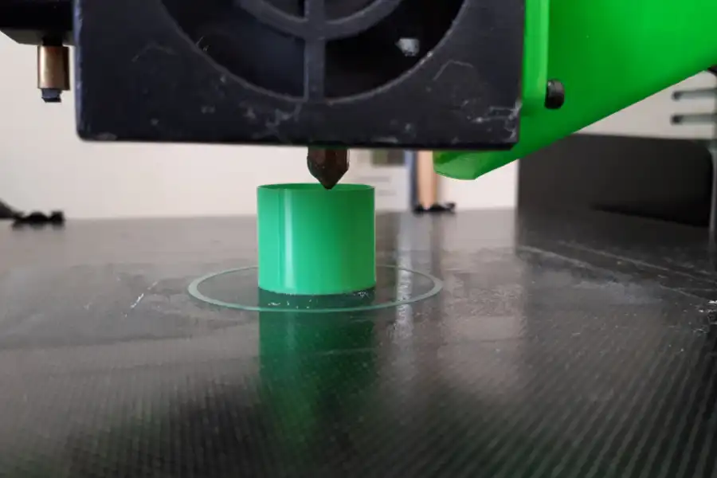
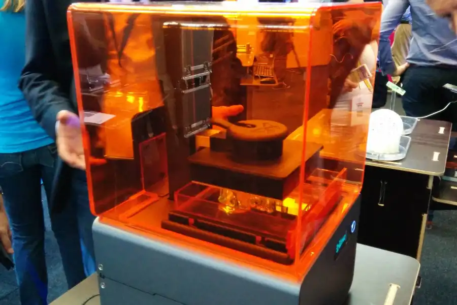
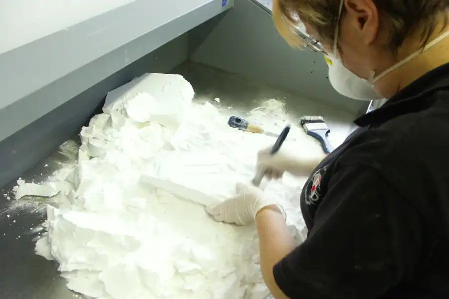
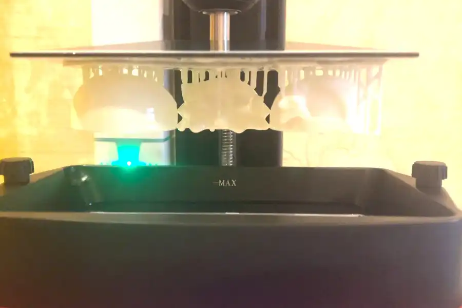

Different 3d Printers
There are a lot of different types of 3d printers that can 3d print in differnt materials.
FDM (Fused Deposition Modeling)
FDM printers are the most widely used type of 3D printers, especially among beginners, hobbyists, and even professionals. They work by melting thermoplastic filament and extruding it layer by layer to form a 3D object. FDM machines are known for being affordable, easy to use, and compatible with a wide range of materials like PLA, ABS, and PETG. While they may not produce the highest level of detail compared to other types, they are excellent for functional parts, prototypes, and larger prints.
| Pros | Cons |
|---|---|
| Affordable and widely available | Lower resolution and surface finish compared to resin printers |
| Easy to use and maintain | Susceptible to warping or layer shifting |
| Works with many types of filament | Visible layer lines |
| Good for large models and structural parts |
SLA (Stereolithography)
SLA printers use a UV laser to cure liquid resin into hardened plastic, layer by layer. They are known for producing extremely high-detail prints with smooth surfaces, making them ideal for jewelry, dental models, miniatures, and intricate prototypes. While SLA printers can be more expensive and messy due to resin handling, they are unmatched in print quality and fine detail.
| Pros | Cons |
|---|---|
| Exceptional detail and surface finish | Resin can be messy and requires careful handling |
| Great for miniatures and fine parts | More expensive materials and maintenance |
| Ideal for artistic and professional applications | Typically smaller build volume than FDM |
| Smooth surfaces, minimal post-processing | Requires post-curing and cleaning |
SLS (Selective Laser Sintering)
SLS printers use a laser to fuse powdered materials, usually nylon, into solid structures. These printers are often used in industrial or advanced prototyping environments due to their strength and ability to produce complex, interlocking designs without support structures. SLS is great for mechanical parts, enclosures, and short-run manufacturing, but it's generally cost-prohibitive for casual users.
| Pros | Cons |
|---|---|
| Strong, functional parts with high durability | Expensive equipment and materials |
| No need for support structures | Not beginner-friendly |
| Excellent for complex geometries and mechanical parts | Requires post-processing to remove excess powder |
| Professional-grade results | Large footprint and safety considerations |
DLP (Digital Light Processing)
DLP printers are similar to SLA but use a digital projector screen to flash each entire layer at once, making them faster than SLA in some cases. They also use liquid resin and produce incredibly detailed prints. DLP printers are often used in dental, jewelry, and prototyping applications that demand speed and high resolution. Like SLA, they also require careful resin handling and post-processing.
| Pros | Cons |
|---|---|
| High-speed printing with excellent detail | Smaller build volumes |
| Great for small, precise models | Requires post-processing and cleaning |
| Consistent quality and accuracy | Resin handling can be messy and hazardous |
| Smooth surfaces and sharp edges | Limited to resin-compatible projects |